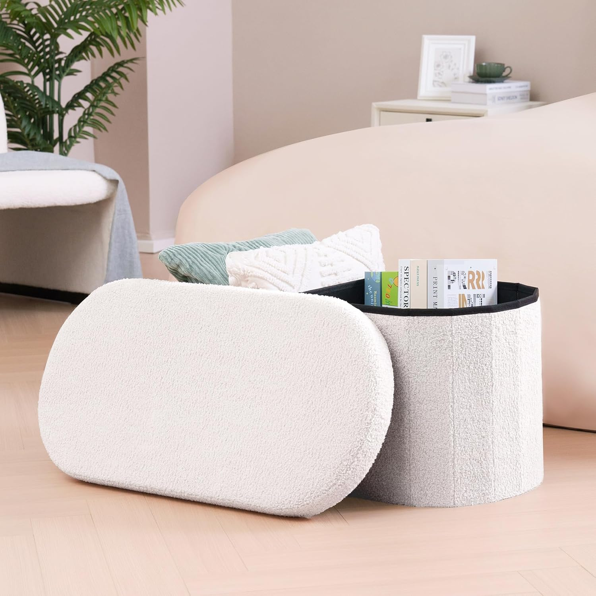

← Back to Shop


Foot of Bed Storage Ottoman
The finishing touch every bedroom needs. This chunky white boucle ottoman sits perfectly at the foot of a bed, adding warmth and texture while hiding storage inside. Extra blankets, pillows, books — it all disappears under the lid. The oval pill shape and plush boucle fabric look expensive without the price tag, and it makes any bedroom feel instantly more intentional and cozy.
Shop on Amazon →As an Amazon Associate I earn from qualifying purchases at no extra cost to you.